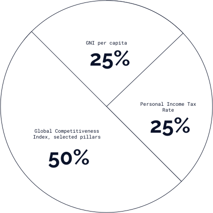

<section class="methodology-investment">
  <div class="container section-wrapper">
    <div class="section-header">
      <h2 class="section-title">Investment index</h2>
      
    </div>
    <div class="section-content section-content--methodology">
      
      <div></div>
      <p class="section-text">
        The Investment Index is computed using three indicators: (i) a subset of
        the pillars from the World Economic Forum’s (WEF) Global Competitiveness
        Index (GCI), (ii) GNI per capita, (in current PPP$), and (iii)
        Personal/Individual Income Tax Rates. For the GCI, the pillars that were
        selected were: Product market, Labour market, Financial system, Market
        size, Business dynamism & Innovation capability. The final score applies
        a weight of 50% to the GCI pillars’ average score and 25% to each of the
        two other indicators.
      </p>
    </div>
  </div>
</section>
